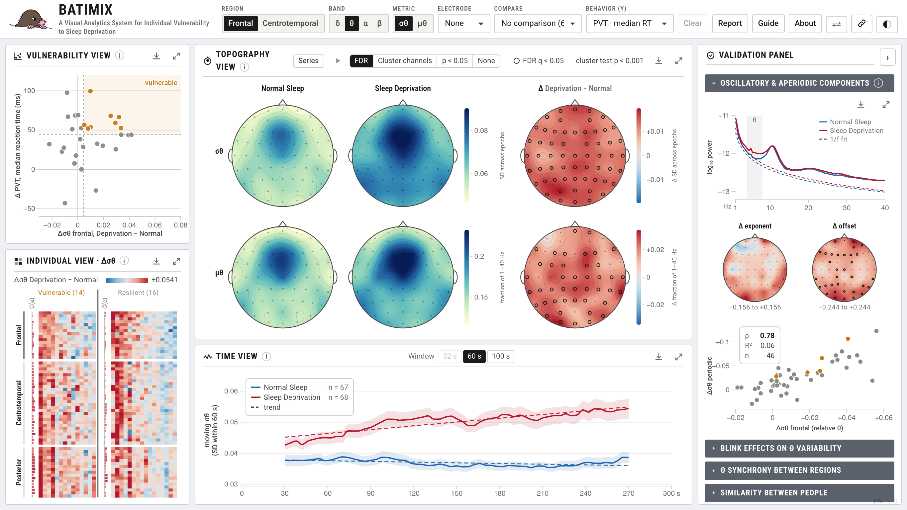

1Introducción
La privación de sueño no afecta a todos por igual: las diferencias entre personas en el deterioro son sistemáticas y de tipo rasgo [1]. La potencia theta (4 a 8 Hz) del EEG en vigilia aumenta con la presión de sueño [2], aunque también refleja control cognitivo [3], y las personas vulnerables muestran una theta más alta y más variable [4]. Con el conjunto público OpenNeuro ds004902 [5, 6], Cui et al. [7] informaron que el aumento de la variabilidad entre épocas de la theta relativa tras la privación se correlaciona con el enlentecimiento en la tarea de vigilancia psicomotora (PVT): ρ = 0.544 en la región frontal y 0.558 en la centro-temporal, con n = 28.
Dos problemas dificultan usar ese resultado. El promedio del grupo oculta a las personas, y una correlación con n ≈ 30 obtenida por un solo camino analítico es frágil: otras decisiones igual de razonables pueden cambiar la conclusión [8, 9], y en EEG esa flexibilidad está documentada [10, 11].
Nuestra audiencia es un investigador en fisiología del sueño que hace screening exploratorio sobre datos públicos. BATIMIX le ayuda a decidir qué canales, regiones y covariables merecen una prueba formal; no es diagnóstica ni predictiva. Nuestras contribuciones son:
- un explorador enlazado, en una sola vista, de la vulnerabilidad individual a la privación de sueño en EEG de reposo;
- una vista explorable de curva de especificación (multiverso) con inferencia conjunta por permutación, enlazada a la dispersión de personas, aplicada a una asociación entre EEG y conducta;
- un reanálisis de la asociación publicada, que no resiste la variación analítica en este conjunto de datos público.
2Trabajo relacionado
Vistas coordinadas y narrativa. BATIMIX sigue el principio de vista general, filtro y detalle bajo demanda [12] y coordina sus paneles por enfoque y enlace [13]. Sus títulos de panel enuncian el hallazgo, a la manera del género de gráfico anotado de Segel y Heer [14], sin pasos ni desplazamiento. Para encuadrar un resultado nulo seguimos a Hullman y Diakopoulos [15] y mostramos la incertidumbre aunque debilite la historia [16].
Multiverso y curva de especificación. El análisis de multiverso repite un análisis sobre todos los conjuntos de datos procesados de forma razonable [8]; la curva de especificación ordena los resultados junto a sus decisiones y añade inferencia conjunta [9]. Dragicevic et al. [17] llevan el multiverso a artículos explorables, Boba [18] separa la inferencia de la exploración, y Del Giudice y Gangestad [19] advierten que mezclar opciones no equivalentes puede ocultar efectos reales. Tomamos de ellos el ordenamiento, el resumen por decisión y la banda nula, y añadimos el enlace de cada especificación con las personas que la producen.
Flexibilidad analítica en EEG. Filtros, corrección ocular y referencia cambian los efectos en potenciales evocados [10]; los rasgos espectrales de baja frecuencia son los más sensibles al preprocesamiento [11], aunque más preprocesamiento no siempre mejora el resultado [20], y un multiverso de biomarcadores de EEG de reposo mostró una robustez limitada [21].
3Datos y métodos
3.1Datos
Usamos OpenNeuro ds004902 v1.0.8 [5, 6] (CC0): 71 participantes en un diseño intra-sujeto contrabalanceado, tras sueño normal (NS) y tras 24 a 30 h de privación de sueño (SD), con EEG de 61 electrodos a 500 Hz y referencia FCz, en reposo con ojos abiertos durante 5 min. El n efectivo es de 68 de 71 personas con EEG pareado (hay 5 registros corruptos en origen). Entre ellas, hay cambio conductual para 30 en el PVT, 32 en la escala de somnolencia de Karolinska (KSS), 33 en la de Stanford (SSS) y 65 en la de afecto positivo y negativo (PANAS).
3.2Procesamiento y estadística
El preprocesamiento (tools/eeg_ica.py) parte del de la Semana 6 (notch de 50 Hz, pasabanda de 1 a 40 Hz y detección de canales malos por z de la log-varianza con interpolación esférica) y añade, como los estudios recientes de privación de sueño con EEG multicanal [3, 7, 27, 28], la referencia promedio, con FCz (la referencia de registro) reinsertado, y un ICA Infomax extendido de 30 componentes. Se eliminan los componentes oculares (correlación atípica con Fp1 o Fp2 dentro del registro, o etiqueta «ojo» de ICLabel con p > 0.85 [29]; el conjunto no tiene canal EOG) y los musculares (ICLabel, p > 0.85): 5.1 por registro en promedio, 2.5 oculares y 2.6 musculares. Tras el ICA se interpolan los canales que superan 200 µV pico a pico en más de la mitad de las épocas, y de las 75 primeras épocas de 4 s se rechazan las que superan 200 µV (se conservan 71 de 75 en promedio). La theta relativa de cada época y electrodo es la potencia de 4 a 8 Hz dividida por la de 1 a 40 Hz (Welch, sin unidades). Por sujeto, condición y electrodo, σθ es su desviación estándar entre épocas y μθ, su media; el cambio es Δ = SD − NS. Las ROI frontal (16 electrodos) y centro-temporal (28) siguen a Cui et al. [7]. Por electrodo usamos una t pareada con y sin FDR de Benjamini y Hochberg sobre 61 pruebas [22]; para la conducta, la ρ de Spearman con IC 95 % (Fisher), y para la dinámica, la media y el error estándar (EE) por época.
3.3Multiverso e inferencia conjunta
Las 896 especificaciones combinan 2 pipelines de preprocesamiento (referencia promedio con ICA, el principal, o referencia FCz sin ICA, el de la Semana 6), 4 regiones (frontal, centro-temporal, posterior y global), 2 métricas (σθ, μθ), 2 formas de cambio (absoluto, relativo), 7 marcadores (PVT mediana del tiempo de reacción o TR, PVT lapsos, PVT desviación estándar del TR, KSS, SSS, PANAS positivo invertido y PANAS negativo), 2 correlaciones (Spearman, Pearson) y 2 reglas de atípicos (todos, o excluir |z| > 2.5). Todo se orienta a deterioro: la hipótesis de Cui et al. predice r > 0.
Para la inferencia conjunta adaptamos el procedimiento de Simonsohn et al. [9] a datos observacionales sin covariables: en cada una de 2000 permutaciones se barajan las filas conductuales entre los 68 sujetos, con la misma permutación para todas las especificaciones (así se conserva su dependencia), y se recalcula el multiverso entero, incluida la regla de atípicos. Los estadísticos son la mediana de r, el número de análisis con p < 0.05 y r > 0, y la Z de Stouffer, con p = (1 + curvas nulas al menos tan extremas) / (1 + 2000). La prueba principal usa solo σθ (448 análisis), la hipótesis de Cui et al., porque mezclar medidas no equivalentes es arriesgado [19]. La banda nula une los percentiles 2.5 y 97.5 de las curvas nulas ordenadas. Todo se precalcula en Python con semilla fija; el Δσθ frontal recalculado coincide con el de cada pipeline (diferencia máxima 4 × 10−17) y el análisis inicial (frontal, σθ, absoluto, PVT mediana, Spearman, todos) reproduce ρ = −0.099 con el pipeline de la Semana 6 (−0.045 con ICA).
4Diseño de la visualización
4.1Disposición en una sola vista
La aplicación (D3.js) ocupa una sola pantalla (Fig. 2) y sigue la organización habitual de los sistemas de analítica visual de IEEE VIS. Una reproducción opcional recorre los cinco minutos en bloques de 40 s y actualiza todas las vistas a la vez. Una cabecera reúne el nombre del sistema, su descripción, un resumen del conjunto de datos y los controles con su etiqueta: región (frontal o centro-temporal), métrica (σθ o μθ), comparación de grupos, marcador del eje Y, Limpiar, Reporte y Acerca de. Debajo, tres columnas de vistas en cajas, cada una con un nombre corto y un ícono: en el centro, la vista de topografía (protagonista) y la temporal; a la izquierda, las personas (vistas de vulnerabilidad e individual); a la derecha, un panel de validación plegable. El hallazgo de cada vista es un subtítulo breve, y todo cabe en 1365 × 768 sin desplazamiento. Introducción, glosario, tareas, método, robustez (multiverso), limitaciones, tabla de datos y créditos van en Acerca de.
4.2Paneles y codificaciones
(a) La vista de topografía es una matriz de 2 × 3 mapas que interpola los 61 electrodos (biarmónica v4 de EEGLAB y FieldTrip; cúbica de MNE y spline esférico en un selector): columnas sueño normal, privación y Δ, filas σθ y μθ del grupo activo, con anillos de p < 0.05 y relleno de FDR en los mapas Δ de las 68 personas. (b) La vista de vulnerabilidad, una dispersión cuadrada, ubica a cada persona por su Δ en la métrica y la región elegidas (eje x) y por su cambio en el marcador del eje Y; las medianas delimitan el cuadrante vulnerable y un recuadro movible da ρ con su IC y su n. (c) La vista individual es un mapa de calor persona × electrodo del Δ, con los grupos vulnerable y resistente y su consistencia C(e). (d) La vista temporal traza, en los cinco minutos, la σθ móvil (ventanas de 40 s) o la theta por época, con ±EE. (e) El panel de validación reúne dos controles de robustez, «¿oscilatorio o 1/f?» (specparam) y «¿lo explican los parpadeos?», y una vista exploratoria de sincronía theta entre regiones (wPLI²).
El sueño normal es azul (#2166AC) y la privación, rojo (#B2182B). Los mapas de sueño normal y privación comparten por fila la escala secuencial YlGnBu, y Δ usa la divergente RdBu de ColorBrewer con el cero en blanco. El ámbar marca el cuadrante vulnerable. La tipografía es Roboto, con Roboto Condensed en los nombres de vista. La aplicación y todas las capturas usan el tema claro.

4.3Interacciones y coordinación
Un clic en una persona (en la dispersión, el mapa de calor o las vistas secundarias) la añade a la selección o la quita, y el lazo libre selecciona varias: con dos personas, las filas de la matriz pasan a ser esas dos, con escalas compartidas, y con tres o más, su promedio. Shift + clic fija a las personas A y B. El selector de comparación divide a todos en dos grupos predefinidos (por ejemplo, sexo, orden de sesión, PSQI o cuadrante vulnerable). Mapas, serie temporal, mapa de calor y vistas secundarias se recalculan sobre la selección; un clic en un electrodo lo usa como eje x de la dispersión, y arrastrar sobre la serie temporal elige una ventana de tiempo. Esc o Limpiar vuelven al estado inicial.
4.4Justificación y tareas
Tres principios guían el diseño: personas antes que promedios [1]; incertidumbre siempre visible (n, IC 95 %, bandas de EE y banda nula) [16], y exploración separada de la inferencia, como en Boba [18]: la prueba conjunta se calcula sobre el multiverso completo predefinido y se informa en Acerca de y en el Reporte. La Tabla 1 asigna las tareas, en la tipología de Brehmer y Munzner [23], a los paneles: el lazo es select, las columnas NS, SD y Δ apoyan compare, y el panel de validación y el multiverso combinan summarize con derive (componentes periódicos, ventanas sin parpadeos, estadísticos nulos).
| Tarea (pregunta) | Panel que la responde |
|---|---|
| T1 Localizar (Q1) | a: columna Δ con marcas de p y FDR |
| T2 Comparar métricas (Q2) | a: filas σθ y μθ |
| T3 Identificar vulnerables (Q3) | b y c: cuadrante, lazo y mapa de calor |
| T4 Comparar (Q4) | a: matriz por grupo; filas A y B |
| T5 Correlacionar (Q5) | b: eje Y y ρ con n, por grupo |
| T6 Describir tendencia (Q6) | d: σθ móvil o θ por época, ± EE |
| T7 Filtrar por moderador (Q7) | cabecera: selector de grupo |
| T8 Verificar robustez | e: panel de validación; multiverso en Acerca de |
5Resultados: caso de estudio
Cada respuesta se lee en el título o la franja de un panel de la Fig. 2.
5.1¿Todos cambian igual? (T3, T4)
No. El Δσθ frontal medio es +0.0030, con una desviación estándar entre personas de 0.022, más de siete veces la media: 40 personas se vuelven más inestables y 28 más estables (Fig. 2b y 2c). En la región centro-temporal la media es +0.0027.
5.2¿Dónde cambia, en la cabeza? (T1, T2)
En σθ, 5 de 61 electrodos tienen p < 0.05 sin corregir (CPz, O2, Oz, PO3 y PO4) y ninguno sobrevive a FDR; en μθ son 4 de 61 (C6, F4, O2 y P6), también con 0 tras FDR. El cambio es difuso (Fig. 2a), sin el foco frontal que sugiere la literatura [2].
5.3¿Cuándo, en los cinco minutos? (T6)
La theta frontal en SD supera a NS en 60 de 75 épocas (diferencia media +0.0081), con una tendencia de +0.0013 por minuto, y la σθ móvil en SD supera a NS en 60 de 66 ventanas: el efecto es leve y sostenido, sin un aumento claro a lo largo del registro (Fig. 2d).
5.4¿Más inestable es más lento? (T5)
Con la especificación de Cui et al. (frontal, σθ, Spearman, Δ frente a Δ), con nuestro preprocesamiento y la variable conductual pública, obtenemos ρ = −0.04 [−0.40, 0.32], n = 30, entre el Δσθ frontal y el Δ de la mediana del TR del PVT: el intervalo incluye el cero y excluye los valores publicados. Hay 6 personas en el cuadrante vulnerable. Con los lapsos del PVT, preferibles a la mediana del TR según Basner y Dinges [24], ρ = 0.07 [−0.30, 0.42], n = 30.
5.5¿Depende de cómo se analiza? (T8)
Para ver si el nulo depende de nuestra especificación o de nuestro preprocesamiento, repetimos el análisis sobre todo el multiverso (Fig. 3, Tabla 2). Con solo σθ (448 análisis), 11 son significativos con r > 0, pero el azar llega hasta 63 (p = 0.31), y la mediana de r es +0.089 (p = 0.11). Con los 896, 58 son significativos, con un azar de hasta 106 (p = 0.13), y ninguna prueba conjunta baja de p = 0.09. Las Z de Stouffer (+11.09 y +10.80) no son significativas porque los análisis están muy correlacionados y su nula por permutación es mucho más ancha que una normal estándar. Los r van de −0.43 a +0.43: ninguno alcanza el valor publicado, y el análisis inicial (ρ = −0.045 con ICA y −0.099 sin ICA) queda en la parte baja de la curva.
En la mediana por decisión destaca el PANAS positivo invertido: 48 de los 58 significativos lo usan (26 sin ICA y 22 con ICA, casi todos con μθ): más aumento de la potencia theta, mayor caída del afecto positivo. Con ICA aparecen además 10 análisis de σθ con la somnolencia subjetiva (SSS), y ninguno con el PVT en ninguno de los dos pipelines. Son pistas exploratorias, no hallazgos: surgen tras mirar 896 análisis y la prueba conjunta no las respalda.
| Estadístico | Solo σθ (448) | Completo (896) |
|---|---|---|
| Mediana de r | +0.089 (p = 0.11) | +0.053 (p = 0.19) |
| Significativos, r > 0 | 11 (azar: hasta 63; p = 0.31) | 58 (azar: hasta 106; p = 0.13) |
| Z de Stouffer | +11.09 (p = 0.09) | +10.80 (p = 0.16) |
| Decisión | Cui et al. [7] | BATIMIX |
|---|---|---|
| Referencia | promedio | promedio (FCz reinsertado) |
| ICA | sí | sí (30 componentes; ojos y músculo) |
| Filtro | 1 a 30 Hz | 1 a 40 Hz, notch 50 Hz |
| Denominador θ relativa | 4 a 30 Hz | 1 a 40 Hz |
| Rechazo de épocas | > 200 µV | > 200 µV |
| TR del PVT | sin < 100 ni > 2000 ms | columna pública |
| n con PVT | 28 | 30 |
5.6La no replicación de Cui et al.
No replicamos la asociación publicada, y tampoco se explica por nuestra especificación ni por el preprocesamiento. El pipeline principal ya usa referencia promedio, ICA y rechazo de épocas como Cui et al. (Tabla 3), y al repetir su pipeline exacto (1 a 30 Hz y denominador de 4 a 30 Hz) el ICA quita 2.4 componentes por registro (Cui et al.: 2.6 a 3.1) y la correlación con el PVT sigue nula (ρ = −0.06 frontal y −0.01 centro-temporal, n = 30); ninguno de los 435 subconjuntos de 28 personas supera ρ = 0.14. Ese pipeline sí refuerza el efecto de grupo frontal (t = 2.32, p = 0.023), sobre todo por el denominador. Quedan dos diferencias: Cui et al. probablemente recalcularon la mediana del TR desde los ensayos, sin los menores de 100 ms ni los mayores de 2000 ms, mientras que usamos la columna pública, y con n = 30 la probabilidad de detectar ρ = 0.3 es ≈ 0.35. Por último, Xiang et al. [5, p. 4] parecen asignar los valores t del PVT a indicadores distintos de los del diccionario del conjunto; nuestros datos siguen el diccionario (27 de 30 personas más lentas sin dormir).
5.7Controles de robustez
σθ refleja un ritmo y no el fondo 1/f del espectro: el Δσθ de cada persona sigue al de su theta periódica (ρ = 0.82 frontal y 0.89 centro-temporal; specparam con los ajustes de Bai et al. [30]). El aumento del offset aperiódico que se observa sin ICA (dz = +0.26, p = 0.034), en línea con Bai et al. [30], desaparece con ICA (dz = +0.01, p = 0.97), lo que sugiere que era en parte artefacto ocular o muscular. Quitar las ventanas de 1 s que tocan un parpadeo apenas cambia el Δσθ de cada persona (ρ = 0.95 frontal, n = 48); quienes más aumentan sus parpadeos sí aumentan más su σθ (ρ = 0.34), más probablemente por una causa común, la somnolencia, que por contaminación.
6Discusión
Lecciones y fortalezas. Un resultado nulo también necesita mostrarse. Un único ρ cercano a cero deja la duda de si falló la especificación o el preprocesamiento; la curva pone todo el espacio razonable frente al azar, y el valor publicado queda fuera de él. El enlace con la dispersión convierte cada r en personas que se pueden inspeccionar, y la matriz de mapas compara métricas y condiciones sin cambiar de estado. Tras la crítica sacamos las instrucciones de la pantalla principal: cada título enuncia su hallazgo y el contexto pasó a Acerca de. La guía paso a paso quedó como una ayuda opcional (botón Guía). El cálculo es reproducible (semilla fija y control de consistencia) y el marco sirve para otras asociaciones entre EEG y conducta en diseños pareados.
Limitaciones. El multiverso ya incluye el preprocesamiento como dimensión (con y sin ICA), pero no el filtro ni el denominador de Cui et al., que probamos aparte. Los componentes de ICA se eligen por regla, sin la revisión visual de Snipes et al. [3] o Ma et al. [28]. Pearson y Spearman son casi redundantes y pueden inflar la apariencia de consistencia, y la Z de Stouffer pondera igual a todos los análisis aunque el n cambie por marcador (PVT 30, KSS 32, SSS 33, PANAS 65). La theta de reposo no tiene por qué generalizarse a la tarea [3]. La detección de canales malos es heurística y los mapas de grupos pequeños son ruidosos, y el diseño aún no se ha probado en proyección ni impreso. Sobre todo, falta validar el diseño con la audiencia, el nivel más externo del modelo anidado de Munzner [25]: en la Semana 13 haremos una prueba informal con 3 a 5 usuarios que resuelvan T1 a T8 pensando en voz alta.
7Trabajo futuro y conclusión
En la Semana 13 incorporamos la referencia promedio y el ICA como pipeline principal y como dimensión del multiverso; quedan un criterio de vulnerabilidad por lapsos del PVT, un resumen de moderadores y el despliegue en GitHub Pages. La conectividad funcional, descartada para el tablero principal (el estudio más parecido no halló cambios con ojos abiertos [26] y 1830 aristas con n = 68 exigen dz ≈ 0.65), se incluyó como vista exploratoria del panel de validación, con referencia promedio, ICA, wPLI² debiased en theta y 10 regiones (45 pares): la sincronía baja en 44 de 45 pares, pero ningún par sobrevive a FDR (prueba conjunta por permutación, p = 0.14).
En conclusión, sin dormir, la theta de cada persona se mueve en direcciones distintas y, en este conjunto público, ese cambio no predice de forma robusta quién se deteriora; la única pista apunta al ánimo (PANAS positivo), no a la vigilancia (PVT). Enlazar la curva de especificación con las personas detrás de cada estimación permite reportar un resultado nulo mostrando todo el espacio de análisis.
Agradecimientos
Curso DS5343 Visualización de Datos (UTEC, 2026-2), Prof. Germain García-Zanabria. Responsabilidades: J. Gurbillon (mapas, Q1 y Q2), A. Coa (dinámica y moderadores, Q6 y Q7), P. Medrano (vulnerabilidad, convergencia y multiverso, Q3 a Q5). Código: github.com/Andrea-Coa/data-visualization-project. Redactado con asistencia de IA (Claude) desde los documentos del equipo; pendiente de revisión por los autores.
Referencias
[1]H. P. A. Van Dongen, M. D. Baynard, G. Maislin, and D. F. Dinges, "Systematic interindividual differences in neurobehavioral impairment from sleep loss: Evidence of trait-like differential vulnerability," Sleep, vol. 27, no. 3, pp. 423-433, 2004. doi: 10.1093/sleep/27.3.423
[2]L. A. Finelli, H. Baumann, A. A. Borbély, and P. Achermann, "Dual electroencephalogram markers of human sleep homeostasis: Correlation between theta activity in waking and slow-wave activity in sleep," Neuroscience, vol. 101, no. 3, pp. 523-529, 2000. doi: 10.1016/S0306-4522(00)00409-7
[3]S. Snipes, E. Krugliakova, E. Meier, and R. Huber, "The theta paradox: 4-8 Hz EEG oscillations reflect both sleep pressure and cognitive control," J. Neurosci., vol. 42, no. 45, pp. 8569-8586, 2022. doi: 10.1523/JNEUROSCI.1063-22.2022
[4]E. C.-P. Chua et al., "Sustained attention performance during sleep deprivation associates with instability in behavior and physiologic measures at baseline," Sleep, vol. 37, no. 1, pp. 27-39, 2014. doi: 10.5665/sleep.3302
[5]C. Xiang, X. Fan, D. Bai, K. Lv, and X. Lei, "A resting-state EEG dataset for sleep deprivation," Sci. Data, vol. 11, Art. no. 427, 2024. doi: 10.1038/s41597-024-03268-2
[6]C. Xiang, X. Fan, D. Bai, K. Lv, and X. Lei, "A resting-state EEG dataset for sleep deprivation," OpenNeuro, ds004902, version 1.0.8, 2025. doi: 10.18112/openneuro.ds004902.v1.0.8
[7]Z. Cui, T. Xie, Y. Zhou, P. Gong, X. Zhang, and P. Wang, "Exploring the differences in neural oscillation mechanisms before and after sleep deprivation," Front. Neurosci., vol. 20, Art. no. 1910878, 2026. doi: 10.3389/fnins.2026.1910878
[8]S. Steegen, F. Tuerlinckx, A. Gelman, and W. Vanpaemel, "Increasing transparency through a multiverse analysis," Perspect. Psychol. Sci., vol. 11, no. 5, pp. 702-712, 2016. doi: 10.1177/1745691616658637
[9]U. Simonsohn, J. P. Simmons, and L. D. Nelson, "Specification curve analysis," Nat. Hum. Behav., vol. 4, no. 11, pp. 1208-1214, 2020. doi: 10.1038/s41562-020-0912-z
[10]P. E. Clayson, S. A. Baldwin, H. A. Rocha, and M. J. Larson, "The data-processing multiverse of event-related potentials (ERPs): A roadmap for the optimization and standardization of ERP processing and reduction pipelines," NeuroImage, vol. 245, Art. no. 118712, 2021. doi: 10.1016/j.neuroimage.2021.118712
[11]K. A. Robbins, J. Touryan, T. Mullen, C. Kothe, and N. Bigdely-Shamlo, "How sensitive are EEG results to preprocessing methods: A benchmarking study," IEEE Trans. Neural Syst. Rehabil. Eng., vol. 28, no. 5, pp. 1081-1090, 2020. doi: 10.1109/TNSRE.2020.2980223
[12]B. Shneiderman, "The eyes have it: A task by data type taxonomy for information visualizations," in Proc. 1996 IEEE Symp. Visual Languages, 1996, pp. 336-343. doi: 10.1109/VL.1996.545307
[13]A. Buja, J. A. McDonald, J. Michalak, and W. Stuetzle, "Interactive data visualization using focusing and linking," in Proc. Visualization '91, 1991, pp. 156-163. doi: 10.1109/VISUAL.1991.175794
[14]E. Segel and J. Heer, "Narrative visualization: Telling stories with data," IEEE Trans. Vis. Comput. Graphics, vol. 16, no. 6, pp. 1139-1148, 2010. doi: 10.1109/TVCG.2010.179
[15]J. Hullman and N. Diakopoulos, "Visualization rhetoric: Framing effects in narrative visualization," IEEE Trans. Vis. Comput. Graphics, vol. 17, no. 12, pp. 2231-2240, 2011. doi: 10.1109/TVCG.2011.255
[16]J. Hullman, "Why authors don't visualize uncertainty," IEEE Trans. Vis. Comput. Graphics, vol. 26, no. 1, pp. 130-139, 2020. doi: 10.1109/TVCG.2019.2934287
[17]P. Dragicevic, Y. Jansen, A. Sarma, M. Kay, and F. Chevalier, "Increasing the transparency of research papers with explorable multiverse analyses," in Proc. CHI Conf. Human Factors in Computing Systems, 2019, pp. 1-15. doi: 10.1145/3290605.3300295
[18]Y. Liu, A. Kale, T. Althoff, and J. Heer, "Boba: Authoring and visualizing multiverse analyses," IEEE Trans. Vis. Comput. Graphics, vol. 27, no. 2, pp. 1753-1763, 2021. doi: 10.1109/TVCG.2020.3028985
[19]M. Del Giudice and S. W. Gangestad, "A traveler's guide to the multiverse: Promises, pitfalls, and a framework for the evaluation of analytic decisions," Adv. Methods Pract. Psychol. Sci., vol. 4, no. 1, 2021. doi: 10.1177/2515245920954925
[20]A. Delorme, "EEG is better left alone," Sci. Rep., vol. 13, Art. no. 2372, 2023. doi: 10.1038/s41598-023-27528-0
[21]Y. Hollenbenders, F. P. Carrle, R. Mähler, C. Maier, and A. Reichenbach, "Reproducibility of electroencephalography biomarkers for diagnosis of major depressive disorder," Aperture Neuro, vol. 6, 2026. doi: 10.52294/001c.165175
[22]Y. Benjamini and Y. Hochberg, "Controlling the false discovery rate: A practical and powerful approach to multiple testing," J. R. Stat. Soc. B, vol. 57, no. 1, pp. 289-300, 1995. doi: 10.1111/j.2517-6161.1995.tb02031.x
[23]M. Brehmer and T. Munzner, "A multi-level typology of abstract visualization tasks," IEEE Trans. Vis. Comput. Graphics, vol. 19, no. 12, pp. 2376-2385, 2013. doi: 10.1109/TVCG.2013.124
[24]M. Basner and D. F. Dinges, "Maximizing sensitivity of the psychomotor vigilance test (PVT) to sleep loss," Sleep, vol. 34, no. 5, pp. 581-591, 2011. doi: 10.1093/sleep/34.5.581
[25]T. Munzner, "A nested model for visualization design and validation," IEEE Trans. Vis. Comput. Graphics, vol. 15, no. 6, pp. 921-928, 2009. doi: 10.1109/TVCG.2009.111
[26]I. M. Verweij, N. Romeijn, D. J. A. Smit, G. Piantoni, E. J. W. Van Someren, and Y. D. van der Werf, "Sleep deprivation leads to a loss of functional connectivity in frontal brain regions," BMC Neurosci., vol. 15, Art. no. 88, 2014. doi: 10.1186/1471-2202-15-88
[27]J. Lian, L. Xu, T. Song, Z. Peng, Z. Zhang, X. An, S. Chen, X. Zhong, and Y. Shao, "Reduced resting-state EEG power spectra and functional connectivity after 24 and 36 hours of sleep deprivation," Brain Sci., vol. 13, no. 6, Art. no. 949, 2023. doi: 10.3390/brainsci13060949
[28]M. Ma, Y. Li, Y. Shao, and X. Weng, "Effect of total sleep deprivation on effective EEG connectivity for young male in resting-state networks in different eye states," Front. Neurosci., vol. 17, Art. no. 1204457, 2023. doi: 10.3389/fnins.2023.1204457
[29]L. Pion-Tonachini, K. Kreutz-Delgado, and S. Makeig, "ICLabel: An automated electroencephalographic independent component classifier, dataset, and website," NeuroImage, vol. 198, pp. 181-197, 2019. doi: 10.1016/j.neuroimage.2019.05.026
[30]D. Bai, J. Hu, S. Jülich, and X. Lei, "Impact of sleep deprivation on aperiodic activity: A resting-state EEG study," J. Neurophysiol., vol. 132, no. 5, pp. 1577-1588, 2024. doi: 10.1152/jn.00304.2024